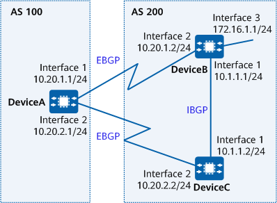

Example for Configuring BFD for BGP
Networking Requirements
Voice and video services have high requirements for network reliability and stability. If a fault occurs on a network, rapid service recovery is required. Generally, the carrier-grade reliability requirement (within 50 ms) must be met. BFD for BGP can meet this requirement.
In Figure 1, a primary link and a backup link are deployed on the network to ensure service transmission stability. EBGP peer relationships are established between indirectly connected DeviceA and DeviceB, and between indirectly connected DeviceA and DeviceC. In normal cases, traffic is transmitted along the primary link DeviceA -> DeviceB. If the primary link fails, BGP must quickly detect the failure and switch traffic to the backup link DeviceA -> DeviceC -> DeviceB.
BFD for BGP can be configured to speed up the link switchover. Specifically, BFD is configured to track the BGP peer relationship between DeviceA and DeviceB. If the primary link between DeviceA and DeviceB fails, BFD will quickly detect the fault and notify BGP of the fault so that service traffic is switched to the backup link for transmission.

In this example, interface 1, interface 2, and interface 3 represent 10GE0/0/1, 10GE0/0/2, and 10GE0/0/3, respectively.

If two devices establish an EBGP peer relationship over a direct link, BFD for BGP is not required because the ebgp-interface-sensitive command is enabled by default to rapidly detect link failures.
To complete the configuration, you need the following data:
Precautions
During the configuration, note the following:
When configuring BFD for BGP, ensure that parameters configured on both ends of a BFD session are consistent.
- To improve security, you are advised to deploy BGP security measures. For details, see "Configuring BGP Authentication." Keychain authentication is used as an example. For details, see Example for Configuring Keychain Authentication for BGP.
Procedure
- Assign an IP address to each device interface. For detailed configurations, see Configuration Scripts.
- Configure basic BGP functions, establish EBGP connections between DeviceA and DeviceB and between DeviceA and DeviceC, and establish an IBGP connection between DeviceB and DeviceC.
# Configure DeviceA.
[DeviceA] bgp 100 [DeviceA-bgp] router-id 1.1.1.1 [DeviceA-bgp] peer 10.20.1.2 as-number 200 [DeviceA-bgp] peer 10.20.1.2 ebgp-max-hop [DeviceA-bgp] peer 10.20.2.2 as-number 200 [DeviceA-bgp] peer 10.20.2.2 ebgp-max-hop [DeviceA-bgp] quit
# Configure DeviceB.
[DeviceB] bgp 200 [DeviceB-bgp] router-id 2.2.2.2 [DeviceB-bgp] peer 10.20.1.1 as-number 100 [DeviceB-bgp] peer 10.20.1.1 ebgp-max-hop [DeviceB-bgp] peer 10.1.1.2 as-number 200 [DeviceB-bgp] network 172.16.1.0 255.255.255.0 [DeviceB-bgp] quit
# Configure DeviceC.
[DeviceC] bgp 200 [DeviceC-bgp] router-id 3.3.3.3 [DeviceC-bgp] peer 10.20.2.1 as-number 100 [DeviceC-bgp] peer 10.20.2.1 ebgp-max-hop [DeviceC-bgp] peer 10.1.1.1 as-number 200 [DeviceC-bgp] quit
# On DeviceA, check whether the BGP peer relationship is in the Established state.
[DeviceA] display bgp peer BGP local router ID : 1.1.1.1 Local AS number : 100 Total number of peers : 2 Peers in established state : 2 Peer V AS MsgRcvd MsgSent OutQ Up/Down State PrefRcv 10.20.1.2 4 200 2 5 0 00:01:25 Established 0 10.20.2.2 4 200 2 4 0 00:00:55 Established 0
- Configure BFD to detect the BGP peer relationship between DeviceA and DeviceB.
# Enable BFD on DeviceA and configure a BFD session to detect the link between DeviceA and DeviceB.
[DeviceA] bfd [DeviceA-bfd] quit
# Enable BFD on DeviceB and configure a BFD session to detect the link between DeviceB and DeviceA.
[DeviceB] bfd [DeviceB-bfd] quit
- Configure the MED attribute.
Configure a route-policy to set the MED attribute for the routes that DeviceB and DeviceC send to DeviceA.
# Configure DeviceB.
[DeviceB] route-policy 10 permit node 10 [DeviceB-route-policy] apply cost 100 [DeviceB-route-policy] quit [DeviceB] bgp 200 [DeviceB-bgp] peer 10.20.1.1 route-policy 10 export [DeviceB-bgp] quit
# Configure DeviceC.
[DeviceC] route-policy 10 permit node 10 [DeviceC-route-policy] apply cost 150 [DeviceC-route-policy] quit [DeviceC] bgp 200 [DeviceC-bgp] peer 10.20.2.1 route-policy 10 export [DeviceC-bgp] quit
# Check the BGP routing table of DeviceA.
[DeviceA] display bgp routing-table BGP Local router ID is 1.1.1.1 Status codes: * - valid, > - best, d - damped, x - best external, a - add path, h - history, i - internal, s - suppressed, S - Stale Origin : i - IGP, e - EGP, ? - incomplete RPKI validation codes: V - valid, I - invalid, N - not-found Total Number of Routes: 2 Network NextHop MED LocPrf PrefVal Path/Ogn *> 172.16.1.0/24 10.20.1.2 100 0 200i * 10.20.2.2 150 0 200i
The BGP routing table shows that the next hop address of the route destined for 172.16.1.0/24 is 10.20.1.2 and traffic is transmitted on the primary link DeviceA -> DeviceB.
- Configure BFD, and set the interval at which BFD Control messages are sent and received as well as the local detection multiplier.
# Enable BFD on DeviceA, set the minimum interval at which BFD Control messages are sent and received to 100 ms, and set the local detection multiplier to 4.
[DeviceA] bfd [DeviceA-bfd] quit [DeviceA] bgp 100 [DeviceA-bgp] peer 10.20.1.2 bfd enable [DeviceA-bgp] peer 10.20.1.2 bfd min-tx-interval 100 min-rx-interval 100 detect-multiplier 4 [DeviceA-bgp] quit
# Enable BFD on DeviceB, set the minimum interval at which BFD Control messages are sent and received to 100 ms, and set the local detection multiplier to 4.
[DeviceB] bfd [DeviceB-bfd] quit [DeviceB] bgp 200 [DeviceB-bgp] peer 10.20.1.1 bfd enable [DeviceB-bgp] peer 10.20.1.1 bfd min-tx-interval 100 min-rx-interval 100 detect-multiplier 4 [DeviceB-bgp] quit
# Check all BFD sessions established for BGP on DeviceA.
[DeviceA] display bgp bfd session all -------------------------------------------------------------------------------- Local_Address Peer_Address Interface 10.20.1.1 10.20.1.2 10GE0/0/1 Tx-interval(ms) Rx-interval(ms) Multiplier Session-State 100 100 4 Up Wtr-interval(m) 0 FRR-flag disable --------------------------------------------------------------------------------
Verifying the Configuration
# Run the shutdown command on DeviceB's 10GE0/0/2 to simulate a failure on the primary link.
[DeviceB] interface 10GE0/0/2 [DeviceB- 10GE0/0/2] shutdown [DeviceB- 10GE0/0/2] quit
# Check the BGP routing table of DeviceA.
[DeviceA] display bgp routing-table BGP Local router ID is 1.1.1.1 Status codes: * - valid, > - best, d - damped, x - best external, a - add path, h - history, i - internal, s - suppressed, S - Stale Origin : i - IGP, e - EGP, ? - incomplete RPKI validation codes: V - valid, I - invalid, N - not-found Total Number of Routes: 1 Network NextHop MED LocPrf PrefVal Path/Ogn *> 172.16.1.0/24 10.20.2.2 150 0 200i
The BGP routing table shows that the backup link DeviceA -> DeviceC -> DeviceB takes effect after the primary link fails, and that the next hop address of the route to 172.16.1.0/24 has become 10.20.2.2.
Configuration Scripts
-
# sysname DeviceA # bfd # interface 10GE0/0/1 ip address 10.20.1.1 255.255.255.0 # interface 10GE0/0/2 ip address 10.20.2.1 255.255.255.0 # bgp 100 router-id 1.1.1.1 peer 10.20.1.2 as-number 200 peer 10.20.1.2 ebgp-max-hop 255 peer 10.20.1.2 bfd min-tx-interval 100 min-rx-interval 100 detect-multiplier 4 peer 10.20.1.2 bfd enable peer 10.20.2.2 as-number 200 peer 10.20.2.2 ebgp-max-hop 255 # ipv4-family unicast peer 10.20.1.2 enable peer 10.20.2.2 enable # return
-
# sysname DeviceB # bfd # interface 10GE0/0/1 ip address 10.1.1.1 255.255.255.0 # interface 10GE0/0/2 ip address 10.20.1.2 255.255.255.0 # interface 10GE0/0/3 ip address 172.16.1.1 255.255.255.0 # bgp 200 router-id 2.2.2.2 peer 10.1.1.2 as-number 200 peer 10.20.1.1 as-number 100 peer 10.20.1.1 ebgp-max-hop 255 peer 10.20.1.1 bfd min-tx-interval 100 min-rx-interval 100 detect-multiplier 4 peer 10.20.1.1 bfd enable # ipv4-family unicast network 172.16.1.0 255.255.255.0 peer 10.1.1.2 enable peer 10.20.1.1 enable peer 10.20.1.1 route-policy 10 export # route-policy 10 permit node 10 apply cost 100 # return
-
# sysname DeviceC # bfd # interface 10GE0/0/1 ip address 10.1.1.2 255.255.255.0 # interface 10GE0/0/2 ip address 10.20.2.2 255.255.255.0 # bgp 200 router-id 3.3.3.3 peer 10.1.1.1 as-number 200 peer 10.20.2.1 as-number 100 peer 10.20.2.1 ebgp-max-hop 255 # ipv4-family unicast peer 10.1.1.1 enable peer 10.20.2.1 enable peer 10.20.2.1 route-policy 10 export # route-policy 10 permit node 10 apply cost 150 # return